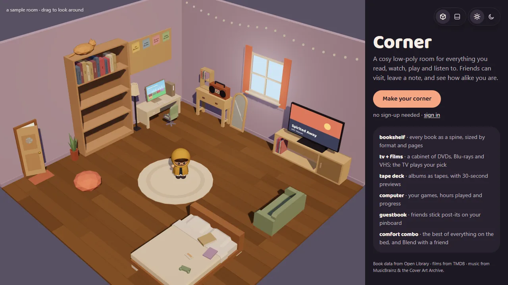

Corner
A cosy low-poly room for everything you read, watch, play and listen to. Friends can visit, leave a note, and see how alike you are.
- Role
- Designer & developer
- Team
- Solo project
- Dates
- Oct 2026
- Stack
The problem
The things you love are scattered across a book tracker, a film log, a music app and a game launcher, each a list or a grid. None of them feels like yours, and none shows a friend who you are at a glance. A bedroom does: the shelf, the stack of DVDs, the tapes by the stereo.
What I built
Every user gets a 3D bedroom at /<username>, and each piece of furniture opens a section. I designed and built all of it, from the schema to the character.
- Bookshelf: every book is a spine, sized by its format and page count, from Open Library
- TV and cabinet: films as DVDs, Blu-rays and VHS from TMDB, and the TV plays your pick
- Tape deck: albums from MusicBrainz and the Cover Art Archive as tapes, with 30-second previews
- Computer: games with hours played and progress, drawn on the monitor's own screen
- Guestbook and Blend: friends stick post-its on your pinboard, and Blend shows a match %, what you share and the combo you both love
- Decorating: rooms start empty and owners add the furniture they want, with themes, décor, one-tap “vibes”, and a customisable homebody character that walks to whatever you tap
- A 2D “quick view” for phones and browsers without WebGL, and guest rooms you can make with no sign-up and save later
How it works
The 3D canvas lives in the /[username] layout, so it stays mounted while you move between sections, and the camera flies from the overview to the bookshelf or the TV. The camera view is derived from the URL, so every close-up is a real page you can link to, with a server-rendered panel beside it.
Furniture uses CC0 models from Kenney's Furniture Kit, recoloured to the room's palette and scaled into the space the layout gives each piece. The pieces that hold your things, like the bookshelf rows and the tape rack, are hand-built, because books and tapes are packed against their exact measurements. Camera presets, zones and furniture geometry are pure, tested functions.
All media share one items catalogue keyed by source and ID, which only the server writes after looking an item up. Each user's copy (rating, note, shelf, hours, progress) lives in user_items, protected by Postgres row level security.
One hard problem
A room that took two seconds to open
Rooms felt slow on the deployed site even though every query was small: pages took 1.7–2.3 seconds before the first byte. Vercel was running my server code in Washington, D.C. while the Supabase database was in Tokyo, so each query crossed the Pacific (about 150 ms), and a room page made four or more of them one after another.
I pinned the functions to Tokyo, next to the database, and stopped the middleware calling Supabase for visitors with no session cookie, since there's nothing to refresh. Then I made the room feel faster too: the 3D scene follows where a click is heading instead of waiting for the server to update the URL, the 3D code and models start loading in parallel straight from the HTML, and models are cached instead of revalidated on every visit.
Results
Corner is live, and anyone can make a room without signing up. It's covered by 37 unit test files for the room geometry and data, pgTAP tests for row level security, and Playwright end-to-end tests on desktop, a phone, and a browser with no WebGL, running against mock Open Library, TMDB, MusicBrainz and iTunes servers.
What's next
Getting Corner into friends' hands, since visiting, post-its and Blend only come alive with other people. After that, a public domain and real email delivery for sign-ups, and more of my own Blender models, now that any TV or monitor model can be dropped in and its screen is found automatically.